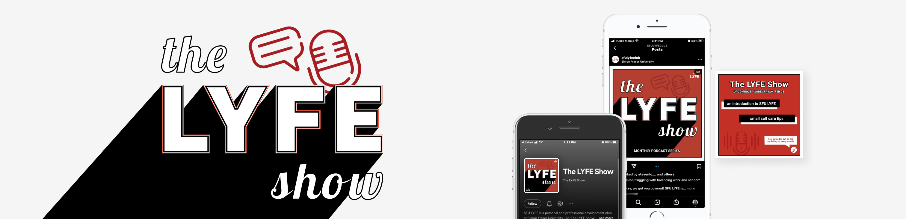
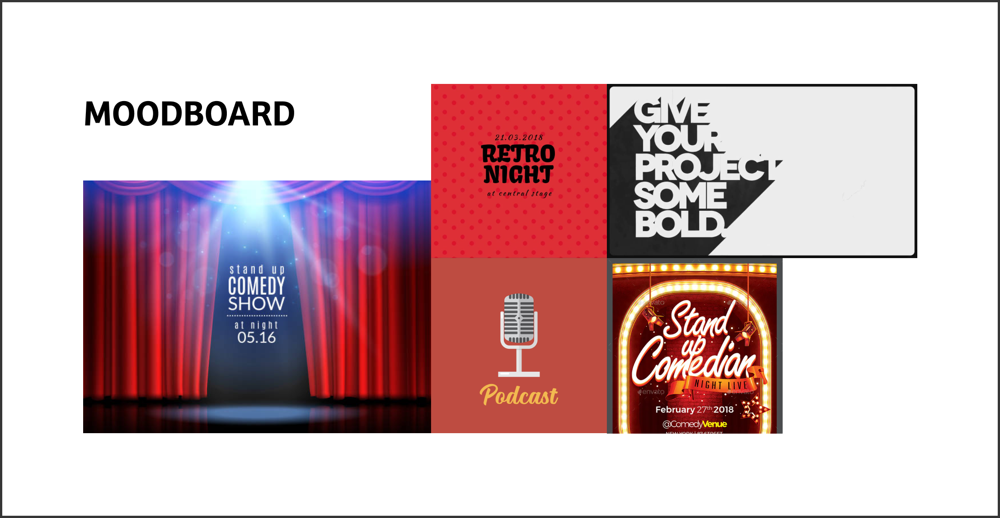
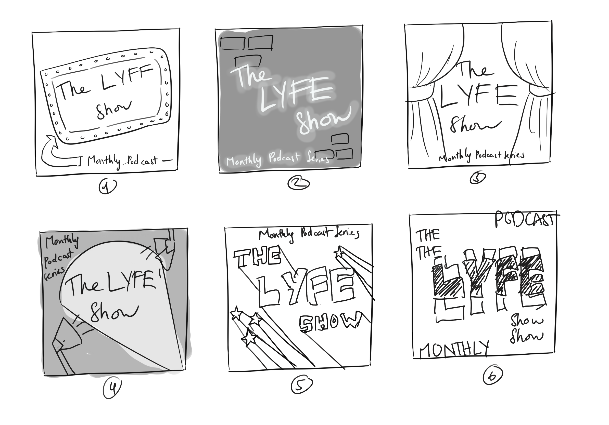
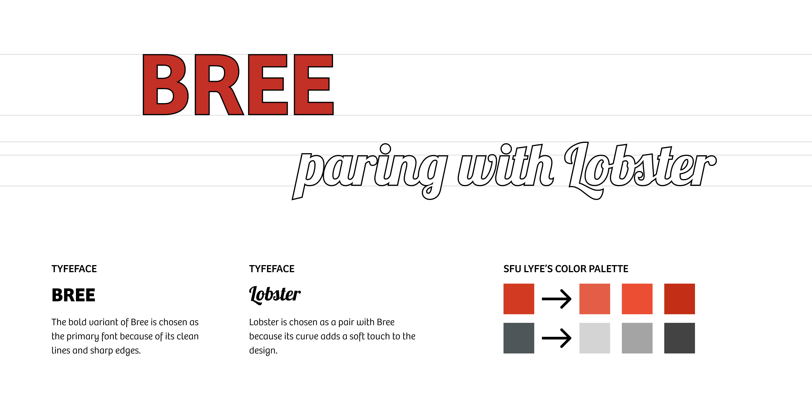
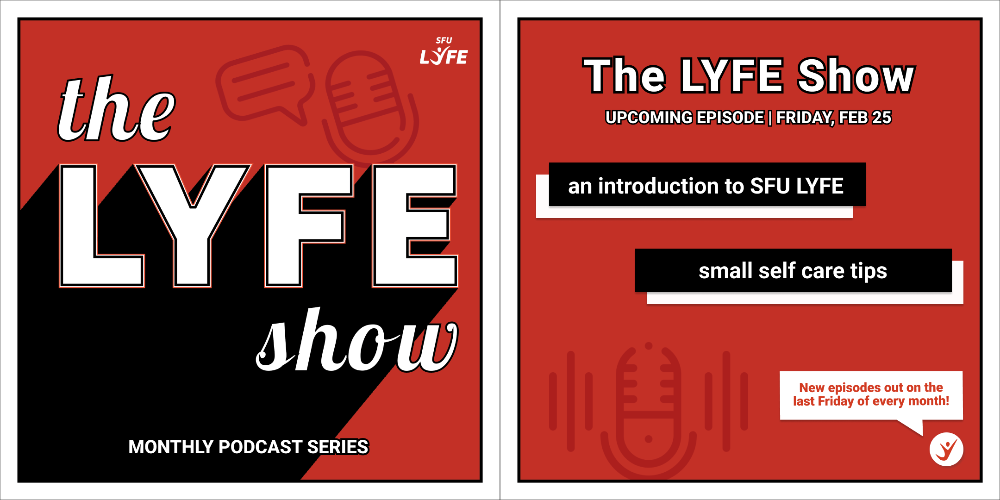
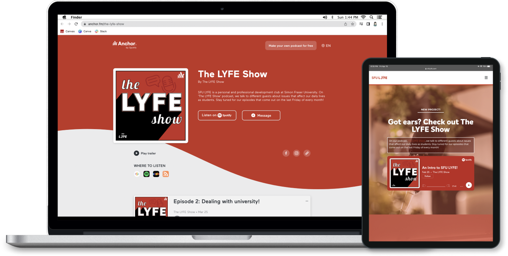

The LYFE Show
Graphic Design, Podcast Cover Design, Volunteer
A monthly podcast series produced by students from SFU. Different guests are invited to talk about issues that affect our daily lives as students.

×

My Role
- Graphic Designer
- Visual Designer
Team
- Linh Nguyen (me)
- Reporting to the Marketing team
Tools
- Figma
- Adobe Illustrator
Duration
- 1 week - Fall 2022
Overview
The LYFE Show is an inspirational podcast series where current and former SFU students share the lessons they've learned. The project launched in the spring of 2022 through SFU LYFE, a student-centered personal and professional development platform. I was responsible for designing the podcast cover and promotional graphics for the podcast.
Art Direction
As the podcast named “The LYFE Show”, I wanted to implement the design of a retro stage. For young and ambitious future leaders, this retro approach sparks their potential inspiration and passion by exploring vibrant colours and bold typography.
Moodboard for The LYFE Show
Ideation
I started the process by sketching and exploring different ways to replicate the feeling of a retro show in the design. Most of the sketches are heavily influenced by the Swiss design approach, which has large typography for the readability of small podcast previews on mobile devices.
My sketches for the podcast cover
Concept Refinement
After discussing with the marketing team, sketch 5 from the ideation was chosen because of its simplicity. One change I made was simplifying the graphical elements by changing the stars to the podcast icon. Therefore, the audiences can immediately tell this is a podcast by looking at the cover both on streaming platforms or on social media.
For the typefaces, the bold variant of Bree is chosen as the primary font because of its clean lines and sharp edges. Lobster is chosen as a pair with Bree because its curve adds a soft touch to the design. I followed the colour palette of SFU LYFE for both the typography and the background so the audiences could easily realize The LYFE Show podcast based on branding awareness.
Typefaces and colour palette for the podcast cover
Implementation
Besides the podcast cover, I also need to design a promotional post on social media for it. I decide to reuse the podcast cover as the main page so the audiences can know and easily recognize the podcast when they find it on streaming platforms.
Promotional post for The LYFE Show on social media
Reflection
The most interesting part of this project is learning to design for different media. Before doing this project, I only have experience in designing social media posts and printed products so designing a podcast cover is a new experience for me. I was able to research the dimension of podcast cover in different streaming platforms like Spotify or Apple Podcast as well as what should be included in a podcast cover.
The LYFE Show on Anchor podcast and SFU LYFE website